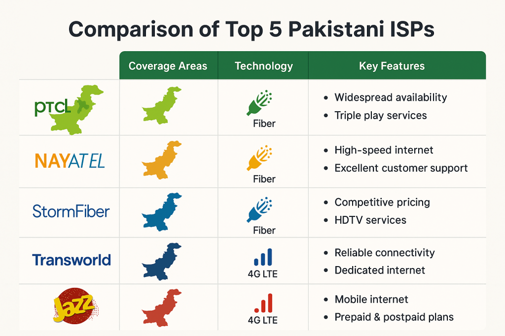

Today's Internet in Pakistan
After the launch of these internet service providers, by 2014, Cybernet and Storm-Fiber introduced FTTH, Triple Play, Optix, TW Home, and other fiber-based services. This advancement paved the way for the availability of 3G and 4G services in May 2014, launched by Ufone and other telecom operators, including Jazz, Zong, and Telenor Pakistan. This led to a rise in online networking on platforms such as Facebook, WhatsApp, and YouTube. Later, with increased internet use for entertainment and educational purposes, there was significant growth in online banking, remote education, and freelancing platforms, making it easier to earn money online between 2018 and 2023.
According to the Pakistan Telecommunication Authority's annual report of 2021, broadband subscribers surpassed 100 million after the COVID-19 pandemic. This increase in subscribers resulted in telecom revenues rising from 148.9 billion PKR to 179 billion PKR.